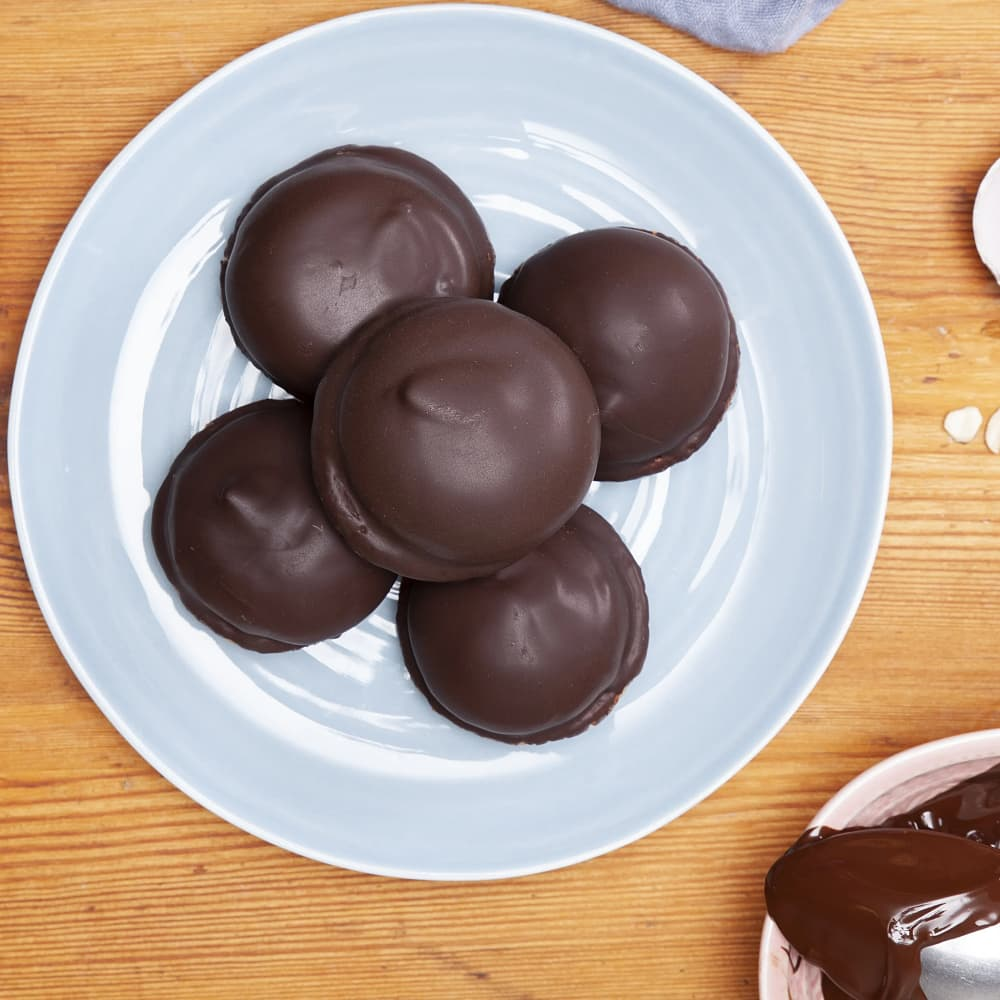

Biskvier
Chokladbiskvi är mångas favorit i konditoridisken. Ändå är det få som provat att baka egna chokladbiskvier. Testa den här chokladdoppade klassikern med mjuk chokladsmörkräm och seg mandelbotten, som dessutom är naturligt glutenfri.

Ingredienser
Botten
- 100 g skållad sötmandel (eller mandelmjöl)
- 1 dl strösocker
- 1 äggvita
Fyllning
- 125 g normalsaltat smör
- 1 1/2 dl florsocker
- 2 tsk vaniljsocker
- 1 äggula
- 50 g mörk chocklad
Garnering
- 150 g mörkchocklad
Gör så här
- Sätt ugnen på 175°C
- Botten: Mixa mandel i en matberedare till ett fint mjöl
- Häll i socker och blanda. Tillsätt vispade äggvitor och rör ihop till en smet
- Spritsa små platta kakor ca 5 cm i diameter på en plåt med bakplåtspapper
- Grädda i mitten av ugnen i ca 10 minuter tills kakorna är gyllenbruna. Låt dem sedan svalna på plåten
- Fyllning: Vispa ihop smör, florsocker och vaniljsocker. Rör ner äggulan
- Smält chokladen, låt svalna och rör sedan ner i smörkrämen till den är slät
- Spritsa eller bre på smörkrämen toppigt på kakornas platta sida. Låt stå kallt tills krämen stelnat
- Garnering: Smält chokladen och låt den svalna något
- Doppa biskvierna i chokladen och låt dem stelna i kylen